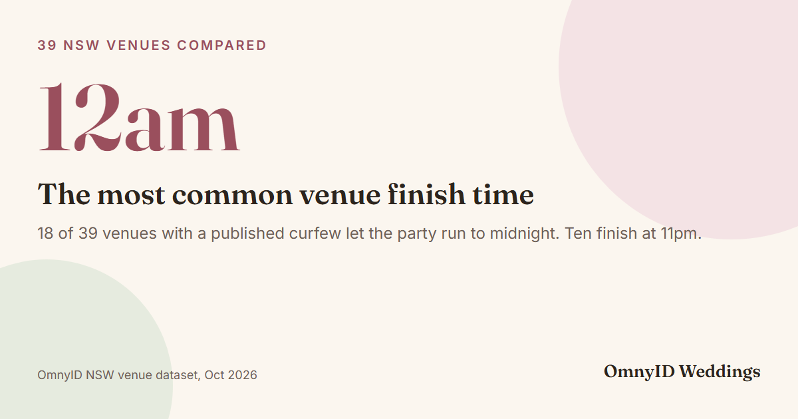

Topics in this guide
Two numbers decide how your wedding day is shaped: when the venue has to finish, and how many hours your package actually gives you. Together they set your ceremony time, how long photos can take and when the dance floor opens. We checked the published finish times and package lengths at NSW venues.
Key figures
- Midnight is the most common finish time: 18 of 39 venues with a published curfew (46%).
- 11pm is next with 10 venues, then 11:30pm with 5. Only 4 finish at 10pm or 10:30pm.
- Five hours is the typical reception package: 19 of 37 venues include exactly five.
- The median package is five hours. A few venues price full-day hire (10 to 14 hours) instead.

Venue finish times in NSW
| Finish time | Venues | Share |
|---|---|---|
| 12am (midnight) | 18 | 46% |
| 11pm | 10 | 26% |
| 11:30pm | 5 | 13% |
| 10pm or 10:30pm | 4 | 10% |
| 9pm or 2am | 2 | 5% |
Shares are rounded. Some venues will extend the finish for a fee, so ask what is flexible.
How many hours a package gives you
| Hours included | Venues |
|---|---|
| 3 to 4 hours | 3 |
| 5 hours | 19 |
| 5.5 hours | 6 |
| 6 hours | 6 |
| 10 to 14 hours (full-day hire) | 3 |
Working the day out from the curfew
A five-hour package that has to end at the curfew gives you a start time to work back from. Here is how that looks for the two most common finish times, assuming you want the package to run to the very end:
| Venue finish | Reception starts | Ceremony ends around |
|---|---|---|
| 12am | 7pm | 5:30pm to 6pm |
| 11pm | 6pm | 4:30pm to 5pm |
The gap between ceremony and reception covers photos, travel and a room reset, so treat it as a sketch and confirm times with your venue. A Sydney and NSW wedding coordination business, Managing Matrimony, recommends building the day around four fixed points:
"Build the day from four anchors: ceremony start, local sunset, travel time and venue curfew."
Managing Matrimony (wedding coordinators, Sydney and regional NSW), "Free Wedding Runsheet Template Australia".
Sunset matters in NSW because it moves a lot over the year, from about 5pm in June to about 7:40pm in December. The same guide tells couples what to allow after the ceremony:
"From the ceremony, add realistic time for congratulations, family photographs, couple portraits, travel and room reset."
Managing Matrimony, same guide.
And what to do when the day starts to run late, which is where curfews bite:
"If the day runs late, do not shift every later time by the same amount. Recheck sunset, supplier departure times, catering service, transport and curfew."
Managing Matrimony, same guide.
Questions to ask the venue
- Is the finish time a hard stop, and does it include pack-down or only music?
- Does the package clock start at guest arrival or at bump-in?
- Can the finish be extended, and what does each extra hour cost?
- What time can suppliers access the room, and when must they be out?
These answers belong on your run sheet. See also capacity, catering and wet-weather plans at NSW venues and the first five decisions that make everything else easier. If you are weighing a staged send-off to protect the party, read whether fake exits are worth it.
Frequently asked questions
What time do wedding venues finish in NSW?
Midnight is the most common published finish time: 18 of 39 NSW venues (46%) finish at 12am. Ten finish at 11pm, five at 11:30pm and four at 10pm or 10:30pm (OmnyID NSW venue dataset, October 2026).
How long is a typical wedding venue package in Sydney?
Five hours is the typical reception package. Nineteen of 37 NSW venues with a stated duration include exactly five hours, and the median is five hours. A few venues price full-day hire of 10 to 14 hours instead.
What time should the ceremony start if the venue finishes at midnight?
If you want a five-hour reception to run to the end, the reception would start around 7pm and the ceremony would end around 5:30pm to 6pm. Allow time for photos, travel and a room reset, and confirm times with your venue.
Can a venue extend its finish time?
Some can, usually for a fee, but it depends on the venue. Ask whether the finish is a hard stop and what each extra hour costs.
How we built this data
OmnyID Weddings keeps a directory of NSW wedding venues, mostly around Sydney with some Hunter Valley, Blue Mountains and coastal venues. For each one we record what the venue publishes on its own website and public listings: starting package prices, capacity, finish times, catering model, and whether a rain plan exists. Descriptions are written in our own words. This snapshot is from October 2026 and covers 176 venues. Not every venue publishes every detail, so each figure below states how many venues it is based on.
We left out any value we had to estimate, so every number here is something a venue has stated. Venue prices change, and "from" prices usually exclude extras, so treat these as a benchmark for shortlisting, not a quote. Confirm everything with the venue before you pay a deposit.
To cite this data: OmnyID Weddings, NSW wedding venue dataset (October 2026), omnyid.com/wedding.